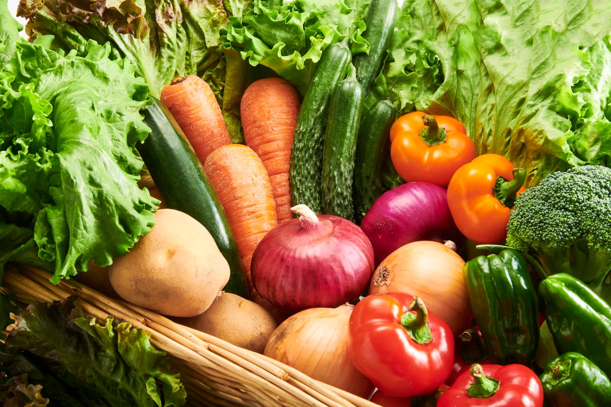
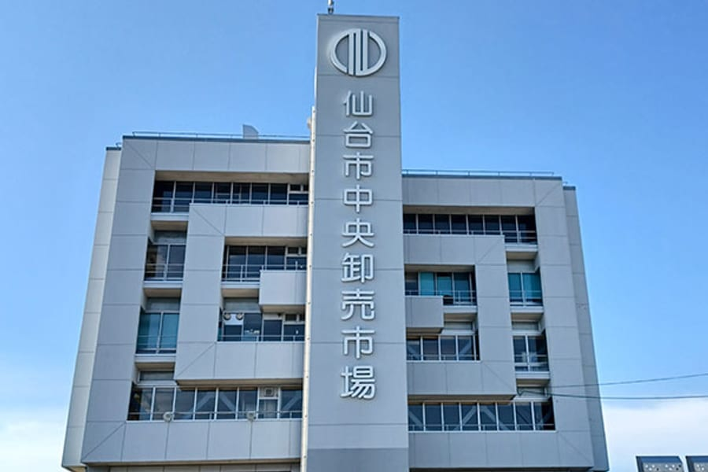
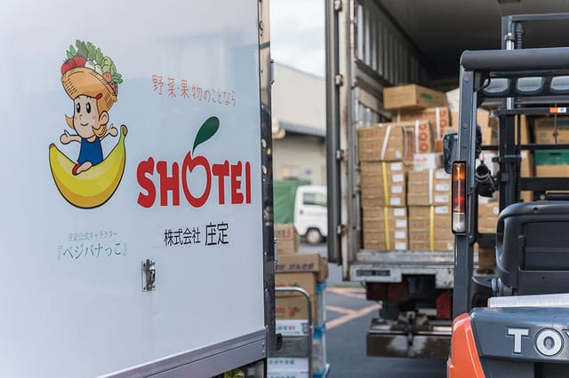
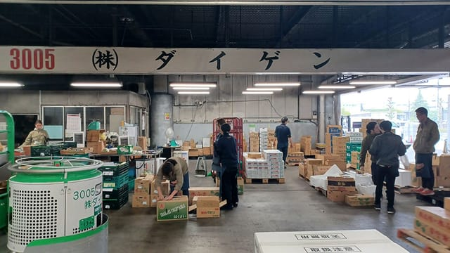
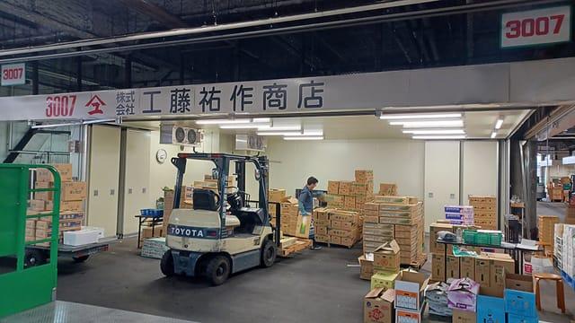
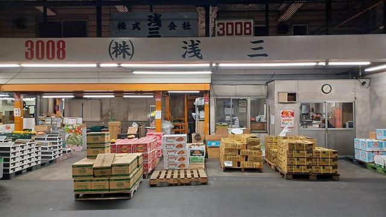
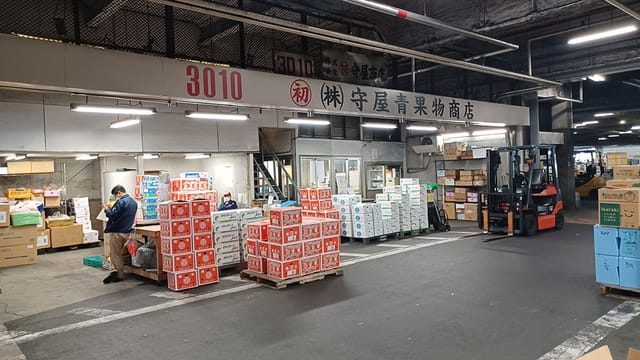
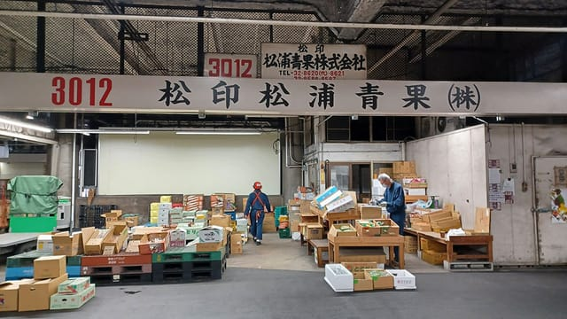

新鮮・安心・安全な青果を、
皆様へお届けします。Delivering fresh, safe produce
to our community.
厳選された品質と確かな安全性を持つ野菜・果物で、地域社会の豊かな食生活を支える仙台の青果卸売協同組合です。A Sendai produce wholesale cooperative supporting rich regional food culture with carefully selected, reliably safe vegetables and fruit.

（昭和41年）Founded
(Showa 41)
信頼と誠実を基盤に、
地域の食を支えて半世紀。Half a century of trust,
supporting regional food.
当組合は、厳選された品質と確かな安全性を持つ野菜・果物を提供することで地域社会に貢献しています。お客様の健康と安心を第一に考え、地域の食生活の向上に努めてまいりました。Our cooperative contributes to the community by providing carefully selected, reliably safe vegetables and fruit. Putting our customers’ health and peace of mind first, we have worked to enrich regional food culture.
信頼と誠実を基盤に、より良いサービスを提供し、地域経済の発展に寄与してまいります。今後も組合員一同、さらなる努力と献身をもって皆さまのご期待にお応えしてまいります。Grounded in trust and integrity, we will keep improving our service and contributing to the local economy. All of our members remain devoted to meeting your expectations.
市場機能を支える5つの事業Five businesses that power the market
精算から配送、加工、保管、給油まで。組合員の事業を多面的に支える共同事業を展開しています。From settlement to delivery, processing, storage, and fueling — joint operations that support our members on every front.
共同計算事業Shared Accounting
仲卸各社の精算処理とシステム運用を専門チームが2交代制で支えます。A dedicated team handles settlement and core-system operations in two daily shifts.
詳しく見るLearn more 02共同配送事業Joint Delivery
100％出資子会社が事業用車両46台で「新鮮・安全・安心」を運びます。Our wholly-owned subsidiary delivers freshness and safety with a 46-vehicle fleet.
詳しく見るLearn more 03青果物加工事業Produce Processing
低温加工場でラップ包装・袋詰・結束など付加価値加工を行います。Value-added wrapping, bagging, and bundling in temperature-controlled facilities.
詳しく見るLearn more 04貯蔵保管・場内運搬事業Storage & Transport
15℃管理の低温エリアで24時間ピッキングを行う物流部門です。24-hour picking operations in a 15°C-controlled cold logistics zone.
詳しく見るLearn more 05給油事業Fueling Service
燃料の共同購入に加え、クリーンな天然ガススタンドも運営しています。Joint fuel procurement plus a clean compressed-natural-gas station.
詳しく見るLearn more
（配送センター）Staff
(Delivery Center)
24時間体制で支える
共同配送センターA delivery center
that runs around the clock
組合100％出資の「株式会社仙台中央卸売市場配送センター」が、産地〜市場〜小売店への配送を担い、東北六県・関東方面まで「新鮮・安全・安心」をお届けしています。Our wholly-owned subsidiary handles delivery from growers to market to retailers — carrying freshness and safety across the six Tohoku prefectures and the Kanto region.
- 運送部門Transport｜全組合員の青果物配送・市内混載・チャーター便 · joint delivery, mixed loads, charter service
- 物流部門Logistics｜15℃管理の低温エリアで24時間ピッキング · 24h picking in a 15°C cold zone
- 加工部門Processing｜低温加工場で付加価値を創出 · value creation in cold-processing facilities
市場を支える12の組合員Twelve member companies
仙台中央卸売市場で青果物の仲卸を担う12社が、組合の共同事業を支えています。Twelve produce-wholesaling companies at the Sendai Central Wholesale Market form the backbone of our cooperative.

株式会社庄定Shotei Co., Ltd.
野菜・果物・その他食料品の仲卸業Wholesale of vegetables, fruit, and foodstuffs

株式会社ダイゲンDaigen Co., Ltd.
野菜・果物・その他食料品の仲卸業Wholesale of vegetables, fruit, and foodstuffs

株式会社工藤祐作商店Kudo Yusaku Shoten Co., Ltd.
野菜・果物・その他食料品の仲卸業Wholesale of vegetables, fruit, and foodstuffs

株式会社浅三Asasan Co., Ltd.
野菜・果物・その他食料品の仲卸業Wholesale of vegetables, fruit, and foodstuffs

株式会社守屋青果物商店Moriya Seikabutsu Shoten Co., Ltd.
野菜・果物・その他食料品の仲卸業Wholesale of vegetables, fruit, and foodstuffs

松印松浦青果株式会社Matsujirushi Matsuura Seika Co., Ltd.
野菜・果物・その他食料品の仲卸業Wholesale of vegetables, fruit, and foodstuffs
仙台市中央卸売市場の開市・休市日をPDFでご確認いただけます。View the open and closed days of the Sendai Central Wholesale Market (PDF).